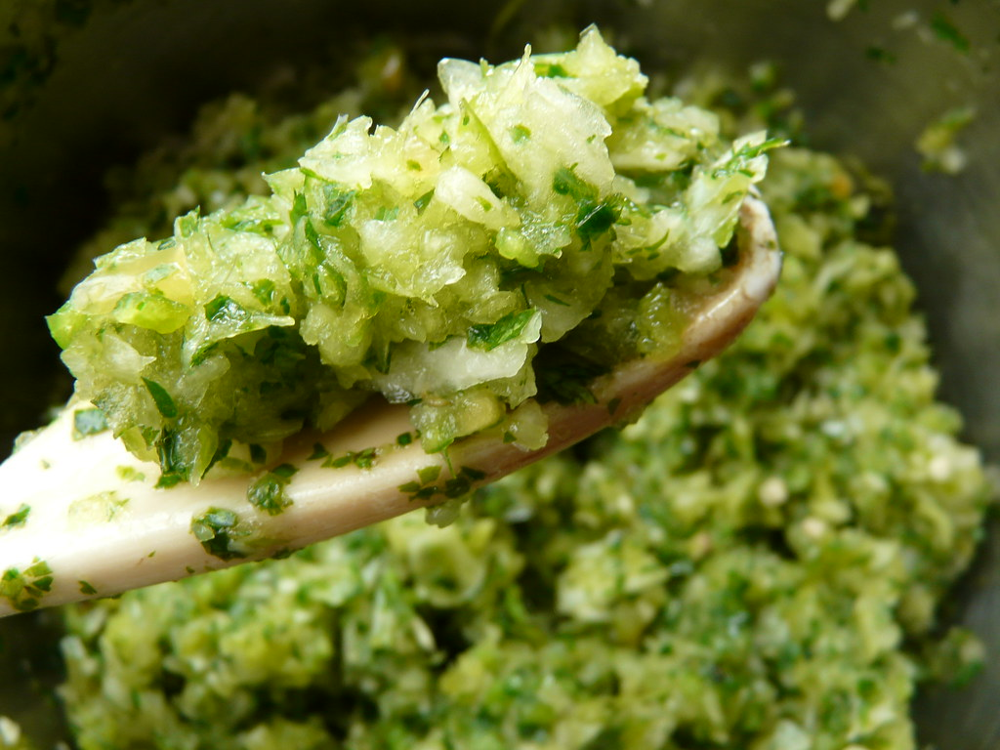

Sofrito

Description
Chopped up flavorful veggies mixed with spices. Store in glass contianer in the fridge and freeze extra in a cube tray. When cooking, use a spoonful to
marinate meat or drop into heated oil for some added flavor to a stir fry.
Ingredients:
- 1 onion
- 1 red pepper
- 3 small green peppers, or 1 big one
- Roma tomatoes
- garlic
- Cilantro
- Cumin
- oil
- salt
Steps:
- Chop onion, peppers, tomatoes, garlic and cilantro as finely as possible. Ideally use a blender or food processor.
- Add cumin, oil and salt, mix or pulse. Store in fridge and/or freezer.
Go back